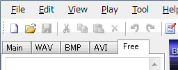

Basic operations
Free text - to use unsupported commands
1. Click [Free] tab in the edit tabs.

2. Input DTX commands directly.
Remarks
The texts inputted in the free tab are imported to the DTX file directly.
In loading DTX file, all DTXC-unsupported-commands are arranged to the free tab.